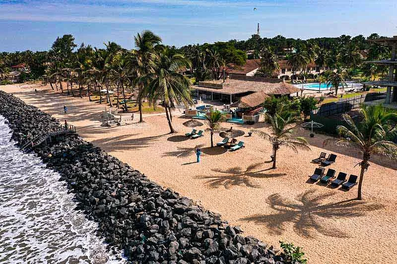

Space to make yourself at home
Kololi Beach Resort
A leafy beachfront resort with self-catering studios, apartments, townhouses and villas. Pools, dining and garden spaces make it an inviting base for a longer holiday.
Enquire about this staySpace to make yourself at home.
- Self-catering stays
- Pools
- Beach access
Choose a compact studio or more room for your family, then mix easy days in the grounds with private excursions. Facilities and pool access depend on the accommodation selected.
Our pick for: Families, couples and travelers who want room to settle in.
Ask our team about accommodation, airport transfers and private tours with an English or Polish-speaking guide. Each service and its price will be confirmed in your personal quote.
Hotel’s official websiteLet’s find your place by the coast.
Send your dates, guests and room preferences. We’ll help you check the options for Kololi Beach Resort.
Rates and availability are quoted on request. Room features, meal plans and any additional charges are confirmed before booking.